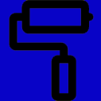

- государственное управление и обеспечение военной безопасности; социальное обеспечение
- государственное управление и обеспечение военной безопасности; социальное обеспечение - государственное управление и обеспечение военной безопасности; социальное обеспечение
 - деятельность в области здравоохранения и социальных услуг
- деятельность в области здравоохранения и социальных услуг
 - деятельность в области информации и связи
- деятельность в области информации и связи
 - деятельность в области культуры, спорта, организации досуга и развлечений
- деятельность в области культуры, спорта, организации досуга и развлечений
 - деятельность профессиональная, научная и техническая
- деятельность профессиональная, научная и техническая
 - добыча полезных ископаемых
- добыча полезных ископаемых
 - обеспечение электрической энергией, газом и паром; кондиционирование воздуха
- обеспечение электрической энергией, газом и паром; кондиционирование воздуха
 - обрабатывающие производства
- обрабатывающие производства
- образование
 - сельское, лесное хозяйство, охота, рыболовство и рыбоводство
- сельское, лесное хозяйство, охота, рыболовство и рыбоводство
 - строительство
 - транспортировка и хранение
- транспортировка и хранение